Contents
clear; close all; clc;
a)
num_samples = 10000; samp_size = 10; samples = randn(num_samples, samp_size); % Generating 10000 samples, each of size 10 samples_mean = mean(samples, 2); % Computing mean of each sample fig1 = figure(); histogram(samples_mean, 50) % Plotting a histogram of the resulting estimates xlim([-2.3, 2.3]) xlabel('Sample average') ylabel('Frequency') title('Histogram of sample averages')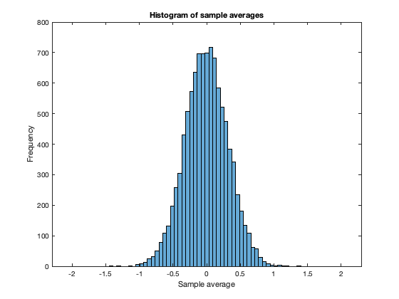
Each sample is drawn from a normal distribution with mean 0 and variance 1. The average of the samples is obtained by summing the samples and then normalizing them by the number of samples that are drawn. Therefore, the average of the samples is sum of Gaussian distributions with mean 0 and variance 1. Sum of Gaussian random variables is a Gaussian random variable. Therefore, the expected shape of the histogram of sample averages is a Normal distribution. Indeed the histogram exhibits a Normal distribution as can be seen in the figure.
Let X be the normal distribution with mean 0 and variance = 1. Therefore, we have:

where, the mean and variance are:
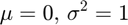
Let the samples drawn from this distribution be:
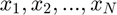
Therefore, the average of the N samples drawn will be:

The variance of the mean will hence be:
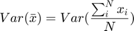
Now variance of a scaled random variable is the same as the variance of the random variable scaled by square of the scaling factor. Therefore, we can re-write:
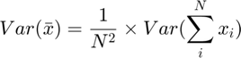
Now variance of sum of random variables is the sum of variance of each random variable and the sum of covariances of each pair of random variables, i.e.:
Here, each sample is drawn independent of each other. Therefore, the covariance of each pair of random variables can be assumed to be 0. Hence, we have:
Substituting back into the equation, we get:
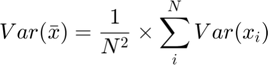
Each sample is drawn from X and hence, we have:
Therefore,
Therefore,
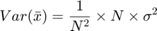
Therefore,
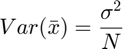
Because 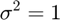, the theoretical variance of the average of 10 values is:
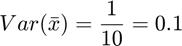
The empirical variance of the 10000 estimates is:
var_estimate = var(samples_mean)
var_estimate =
0.0998
As can be seen, indeed the empirical variance of the 10000 estimates is close to the theoretically predicted variance of the average of 10 values.
b)
samples_median = median(samples, 2); % Computing median of each sample fig2 = figure(); histogram(samples_median, 50) % Plotting a histogram of the resulting estimates xlim([-2.3, 2.3]) xlabel('Sample median') ylabel('Frequency') title('Histogram of sample median')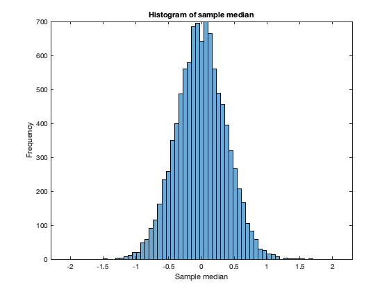
The histogram of sample medians also exhibits a normal distribution
fig3 = figure(); subplot(1, 2, 1) normplot(samples_mean) title('Q-Q plot of sample mean') subplot(1, 2, 2) normplot(samples_median) title('Q-Q plot of sample median')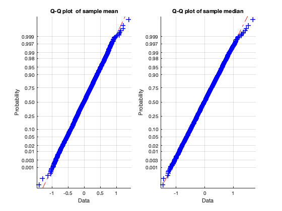
From the Q-Q plots, we see that for both sample mean and sample median, the Q-Q plots has points lie very close to the straight line with almost no deviation. Hence, we can say that both the distribution of sample mean and the distribution of sample median follow Normal distributions.
c)
samples_minimum = min(samples, [], 2); % Computing minimum of each sample samples_maximum = max(samples, [], 2); % Computing maximum of each sample samples_midpoint = (samples_minimum + samples_maximum)/2; % Computing midpoint of each sample fig4 = figure(); histogram(samples_midpoint, 50) % Plotting a histogram of the resulting estimates xlim([-2.3, 2.3]) xlabel('Sample midpoint') ylabel('Frequency') title('Histogram of sample midpoints') fig5 = figure(); normplot(samples_midpoint) title('Q-Q plot of sample midpoint')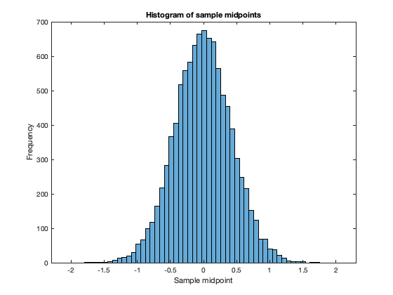 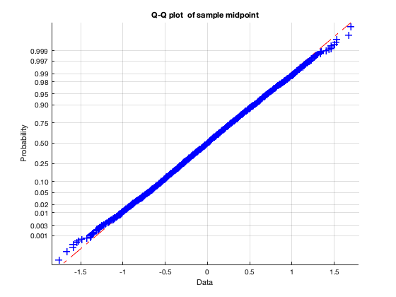
From the histogram, we can see that the distribution of sample midpoints also appears to be normal. Additionally, from the Q-Q plot we can see that the points lie very close to the straight line with almost no deviation. And hence we confirm that the distribution of midpoints of samples drawn from a normal distribution is also normal.
d)
num_samples = 10000; samp_size = 256; samples = randn(num_samples, samp_size); % Generating 10000 samples, each of size 10 sub_matrix_sizes = [8, 16, 32, 64, 128, 256]; var_mean = zeros(length(sub_matrix_sizes), 1); var_median = zeros(length(sub_matrix_sizes), 1); var_midpoint = zeros(length(sub_matrix_sizes), 1); theor_var_mean = 1./sub_matrix_sizes; for i = 1:length(sub_matrix_sizes) sub_matrix_size = sub_matrix_sizes(i); sub_matrix_indices = randsample(1: samp_size, sub_matrix_size); sub_matrix = samples(:, sub_matrix_indices); % Computing the unbiased estimators as above: sub_matrix_mean = mean(sub_matrix, 2); sub_matrix_median = median(sub_matrix, 2); sub_matrix_minimum = min(sub_matrix, [], 2); sub_matrix_maximum = max(sub_matrix, [], 2); sub_matrix_midpoint = (sub_matrix_maximum - sub_matrix_minimum)/2; var_mean(i) = var(sub_matrix_mean); var_median(i) = var(sub_matrix_median); var_midpoint(i) = var(sub_matrix_midpoint); end fig6 = figure(); plot(log(sub_matrix_sizes), log(var_mean), 'r', 'DisplayName', 'Variance of mean'); hold on; plot(log(sub_matrix_sizes), log(var_median), 'k', 'DisplayName', 'Variance of median'); plot(log(sub_matrix_sizes), log(var_midpoint), 'b', 'DisplayName', 'Variance of midpoint'); plot(log(sub_matrix_sizes), log(theor_var_mean), 'g', 'DisplayName', 'Theoretical variance of mean'); xlabel('log(sample size)') ylabel('log(variance)') title('log-log plot of variance and sample size') legend('Location', 'southwest');